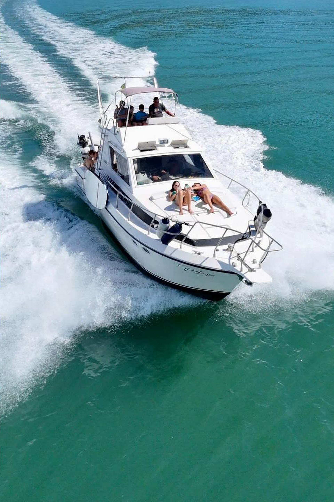
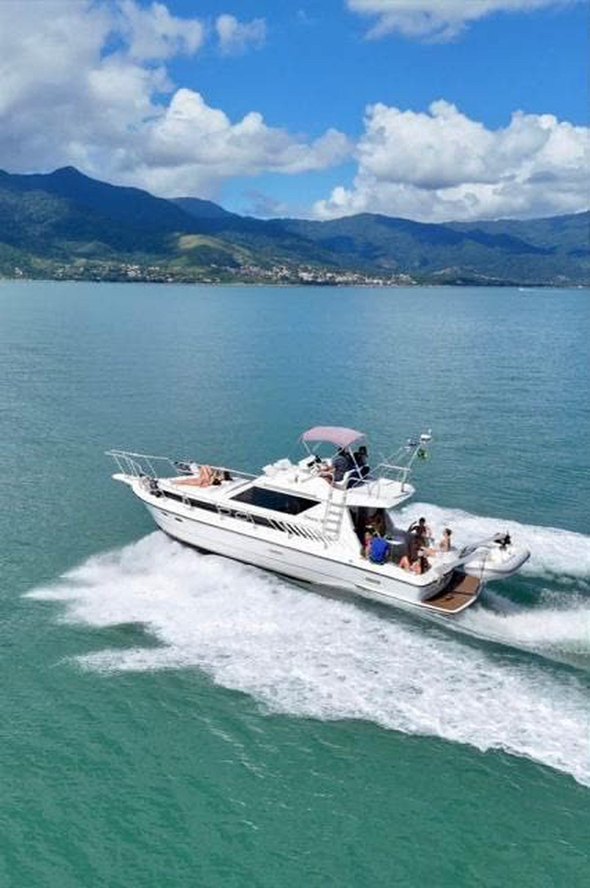
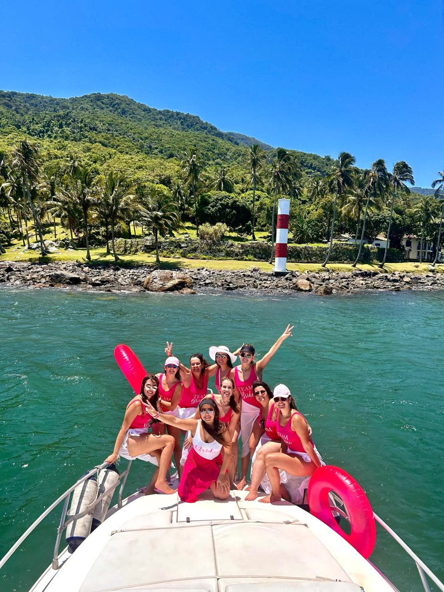
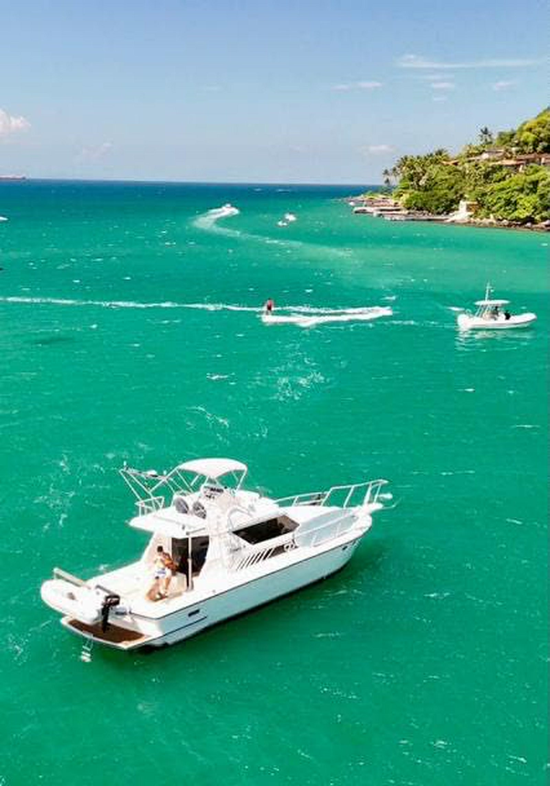

★★★★★ 5,0 no Google · Ilhabela
Lancha Ilhabela Refúgio.
Passeio de lancha privativo só com a sua turma, saindo do Saco da Capela com churrasco a bordo.
5,0★
24h
100%
1
O passeio
A lancha é toda de vocês.
Saco da Capelaembarque
Praia da Fomemergulho em água verde
Jabaquaraparada para banho
Churrasco a bordofeito pelo marinheiro

Monte seu passeio
Chamar no WhatsApp
Escolha e chame no WhatsApp.
O que vocês querem
Quem vai
Adultos
Criançasaté 12 anos
Cachorros
A bordo
Conforto de verdade.
- Lancha limpa e cheirosa
- Estofados macios
- Cabine com cama de casal
- Marinheiro churrasqueiro


Avaliações no Google
De quem já foi.
5,0
★★★★★nota máxima no Google
★★★★★
A lancha é linda e confortável. Tem cama de casal para as crianças descansarem e o marinheiro é um ótimo churrasqueiro!Rágila N. · Google
★★★★★
Lancha impecável, marinheiro nota 10 e os lugares paradisíacos!Rodrigo F. · Google
★★★★★
Levei a família com criança pequena e idosos e foi perfeito.Luca L. · Google
Dúvidas
Antes de embarcar.
O passeio é privativo?
Sim. A lancha sai só com o seu grupo.
Posso levar criança e cachorro?
Pode. Tem cabine com cama de casal pras crianças descansarem.
Tem churrasco a bordo?
Tem. O marinheiro faz o churrasco durante o passeio.
Como reservo?
Monte o passeio aqui no site e chame no WhatsApp. Atendimento 24h.
Embarque
No Saco da Capela.
- EndereçoAv. Pedro de Paula Moraes, 253 · Saco da Capela, Ilhabela
- Atendimento24 horas, todos os dias
- WhatsApp(11) 97644-2448